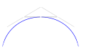
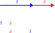

A cubic Bézier curve consists of 4 points. An example situation where \(t=0.5\):
Our objective is to define point J with only A, B, C, D and t. We shall start by defining some vectors:
\(\overline{AE}=t\overline{AB}{,}\qquad \overline{BF}=t\overline{BC}{,}\qquad \overline{CG}=t\overline{CD}\)
And some more with the same principle:
\(\overline{EH}=t\overline{EF}{,}\qquad \overline{FI}=t\overline{FG}\)
And finally:
\(\overline{HJ}=t\overline{HI}\)
Now let's define even more vectors, but with addition instead.
\(\overline{EF}=\overline{EB}+\overline{BF}{,}\qquad \overline{FG}=\overline{FC}+\overline{CG}{,}\qquad \overline{HI}=\overline{HF}+\overline{FI}\)
Now, to define, for example, \(\overline{EF}\) in terms of A, B, C and D, we need to know \(\overline{EB}\). Look at this:
Because of this, \(\overline{EB}=(1-t)\overline{AB}\), \(\quad\overline{FC}=(1-t)\overline{BC}\) and \(\overline{HF}=(1-t)\overline{EF}\)
Now we can define the position vector \(\overline{OJ}\) as
\[ \begin{align*} \overline{OJ} &= \overline{OA}+ \overline{AE} + \overline{EH} + \overline{HJ}\\ &=\overline{OA}+ t\overline{AB}+t\overline{EF}+t\overline{HI}\\ &=\overline{OA}+ t\overline{AB}+t\left(\overline{EB}+\overline{BF}\right)+t\left(\overline{HF}+\overline{FI}\right)\\ &=\overline{OA}+t\overline{AB}+t\left(\left[1-t\right]\overline{AB}+t\overline{BC}\right)+t\left(\left[1-t\right]\overline{EF}+t\overline{FG}\right)\\ &=\overline{OA}+t\overline{AB}+t\left(\left[1-t\right]\overline{AB}+t\overline{BC}\right)+t\left(\left[1-t\right]\left[\overline{EB}+\overline{BF}\right]+t\left[\overline{FC}+\overline{CG}\right]\right)\\ &=\overline{OA}+t\overline{AB}+t\left(\left[1-t\right]\overline{AB}+t\overline{BC}\right)+t\left(\left[1-t\right]\left[\left\{1-t\right\}\overline{AB}+t\overline{BC}\right]+t\left[\left\{1-t\right\}\overline{BC}+t\overline{CD}\right]\right)\\ &=\overline{OA}+t\overline{AB}+t\left(1-t\right)\overline{AB}+t^2\overline{BC}+t\left(\left[1-t\right]^2\overline{AB}+t\left[1-t\right]\overline{BC}+t\left[1-t\right]\overline{BC}+t^2\overline{CD}\right)\\ &=\overline{OA}+t\overline{AB}+t\left(1-t\right)\overline{AB}+t^2\overline{BC}+t\left(\left[1-t\right]^2\overline{AB}+2t\left[1-t\right]\overline{BC}+t^2\overline{CD}\right)\\ &=\overline{OA}+t\overline{AB}+t\left(1-t\right)\overline{AB}+t^2\overline{BC}+t\left(1-t\right)^2\overline{AB}+2t^2\left(1-t\right)\overline{BC}+t^3\overline{CD}\\ &=\overline{OA}+t\overline{AB}+t\left(1-t\right)\overline{AB}+t\left(1-t\right)^2\overline{AB}+t^2\overline{BC}+2t^2\left(1-t\right)\overline{BC}+t^3\overline{CD}\\ &=\overline{OA}+\left(t+t\left[1-t\right]+t\left[1-t\right]^2\right)\overline{AB}+\left(t^2+2t^2\left[1-t\right]\right)\overline{BC}+t^3\overline{CD}\\ &=\overline{OA}+\left(t^3-3t^2+3t\right)\overline{AB}+\left(3t^2-2t^3\right)\overline{BC}+t^3\overline{CD} \end{align*} \]
We will now make this into a parametric equation. To define the vectors by their x and y components, let's define them by their coordinates.
\(\overline{OA}=x_1\overline{i}+y_1\overline{j}\)
\(\overline{AB}=\left(x_2-x_1\right)\overline{i}+\left(y_2-y_1\right)\overline{j}\)
\(\overline{BC}=\left(x_3-x_2\right)\overline{i}+\left(y_3-y_2\right)\overline{j}\)
\(\overline{CD}=\left(x_4-x_3\right)\overline{i}+\left(y_4-y_3\right)\overline{j}\)
Then, insert these into the earlier:
\(\overline{OJ}=x_1\overline{i}+y_1\overline{j}+\left(t^3-3t^2+3t\right)\left(x_2-x_1\right)\overline{i}+\left(t^3-3t^2+3t\right)\left(y_2-y_1\right)\overline{j}\)
\(+\left(3t^2-2t^3\right)\left(x_3-x_2\right)\overline{i}+\left(3t^2-2t^3\right)\left(y_3-y_2\right)\overline{j}+t^3\left(x_4-x_3\right)\overline{i}+t^3\left(y_4-y_3\right)\overline{j}\)
Separate x and y components:
\(\overline{OJ}_x=x_1\overline{i}+\left(t^3-3t^2+3t\right)\left(x_2-x_1\right)\overline{i}+\left(3t^2-2t^3\right)\left(x_3-x_2\right)\overline{i}+t^3\left(x_4-x_3\right)\overline{i}\)
\(\overline{OJ}_y=y_1\overline{j}+\left(t^3-3t^2+3t\right)\left(y_2-y_1\right)\overline{j}+\left(3t^2-2t^3\right)\left(y_3-y_2\right)\overline{j}+t^3\left(y_4-y_3\right)\overline{j}\)
Express as a parametric equation:
\( \begin{cases} x=x_1+\left(t^3-3t^2+3t\right)\left(x_2-x_1\right)+\left(3t^2-2t^3\right)\left(x_3-x_2\right)+t^3\left(x_4-x_3\right)\\ y=y_1+\left(t^3-3t^2+3t\right)\left(y_2-y_1\right)+\left(3t^2-2t^3\right)\left(y_3-y_2\right)+t^3\left(y_4-y_3\right) \end{cases} {,}\quad 0\le t\le1 \)
Voilà.
Link to an interactive tool using this principle.